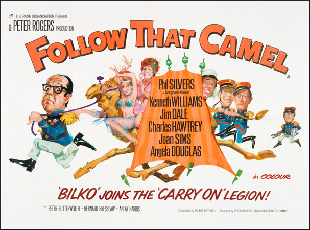

Peter Rogers
Talbot Rothwell
His reputation brought into disrepute by Captain Bagshaw, a competitor for the affections of Lady Jane Ponsonby, Bertram Oliphant West AKA "Bo" decides to leave England and join the French Foreign Legion, followed by his faithful manservant Simpson. Originally mistaken for enemy combatants at Sidi Bel Abbès, the pair eventually enlist and are helped in surviving Legion life by Sergeant Knocker, although only after they discover that when he is "on patrol" he is actually enjoying himself at the local cafe with the female owner, Zig-Zig.
Meanwhile Lady Jane, having learnt that Bo was really innocent, heads out to the Sahara to bring him back to England. Along the way she has several encounters with men who exploit the fact that she is naive and travelling alone. After several such run-ins, including with the Legion fort's Commandant Burger (who incidentally once was her fencing teacher and joined the Legion in self-imposed shame after he had inadvertently cut her finger during a lesson), she meets Sheikh Abdul Abulbul and ends up becoming a part of his harem and planned 13th wife.
Knocker and Bo are kidnapped by Abulbul after being lured to the home of Cork Tip, a belly dancer at the Café Zig-Zig. Simpson follows them to the Oasis El Nooki but is also captured. After entering Abulbul’s harem and discovering Lady Jane, Bo and Simpson give themselves up while Knocker escapes (or rather is allowed to by Abulbul) back to Sidi Bel Abbes to warn Commandant Burger of Abulbul’s plans to attack Fort Zuassantneuf. However, during this time Zig-Zig has told the Commandant about Knocker's true destination when on patrol, and therefore upon his return his story is not believed. It is only when Knocker mentions Lady Jane that they realise he was telling the truth and the Commandant organises a force to reinforce the fort.
Along the way they discover Bo and Simpson staked to the ground at the now abandoned oasis. The relief column marches on towards the fort but heat, lack of water and a sand castle building competition gone wrong decimates the force to a handful. The remaining members reach the fort to find that they are too late; the attack has already occurred and the garrison wiped out.
After learning that Abulbul's celebration of the successful attack includes marrying Lady Jane, Bo, Burger, Knocker and Simpson rescue her from his tent, leaving Simpson behind dressed as a decoy. When Abulbul discovers the deception, he chases Simpson back to the fort where, through the imaginative use of a gramophone and a German marching song, gum arabic, coconuts, gunpowder and a cricket bat, the group holds off Abulbul’s army until a relief force arrives. However, Commandant Burger ends up as a (and the sole) casualty among the protagonists.
Back in England the group reunites for a game of cricket, with Knocker having been promoted to Commandant and Lady Jane having conceived a son by the late Burger. Bo is batting, but when he hits the ball, it explodes. The bowler is then shown to be Abulbul having gained his revenge, to which Bo, with a broken bat and burnt clothes, good-naturedly responds "Not out!"
Filming dates: 1 May - 23 June 1967.
Interiors: Pinewood Studios, Buckinghamshire.
Exteriors: (1) Rye and Camber Sands, Sussex, (2) Birkdale Beach near Southport, (3) Swakeleys House, Ickenham, Middlesex, (4) Osterley Park House, Isleworth, Middlesex.
The location filming at Camber Sands took three weeks, the longest in the series. When The Rank Organisation took over the Carry On series from Anglo Amalgamated in 1966, they wanted to remove the famous 'Carry On' prefix, fearing that their cinematic output would be tainted with the low-brow name. The two films that were affected by this were Don't Lose Your Head and Follow That Camel. Realising their error, Rank re-released them both soon afterwards and the box office takings soared.
Phil Silvers was dramatically losing his sight during filming, so has to wear both contact lenses and glasses.
Phil Silvers was paid a great deal more than any other cast member, which provoked a great deal of animosity among the regular Carry On team. Despite Talbot Rothwell writing in January 1967 that the part "simply yells for Phil Silvers all the way along. I just can't get this Bilko image out of my mind", the central role of the fast-talking Foreign Legion Sergeant had originally been earmarked for Sid James. However, with a commitment to the ITV sitcom George and the Dragon, Sid's part was recast. Sid suffered a heart attack on 13 May 1967, less than two weeks into the filming schedule.
Names also considered for the Phil Silvers role included Woody Allen.
The character named "Corktip" is a parody of "Cigarette" in the 1936 film Under Two Flags, a film about the French Foreign Legion in the Sahara. The name refers to cigarettes, such as the Craven A brand, which had a cork tip.
The song used by Bo and the others to trick Abdul into thinking there are reinforcements coming is "Durch die grüne Heide", a marching song used by the German Army during World War II.
Sheena the Camel was on loan from Chessington Zoo. Unfortunately it had never walked on sand before, so tracks had to be laid down for it.
Whilst buried in the sand, Jim Dale and Peter Butterworth has to be wrapped in blankets and given brandy to keep the cold out. In fact, shooting had to be halted several times because there was snow on the sands.
Movie Metropolis - "It guest stars Phil Silvers, an old favorite of mine, but not even he can save the film from itself. I can't say I had a great time with Follow That Camel, but it's all clearly in good fun."